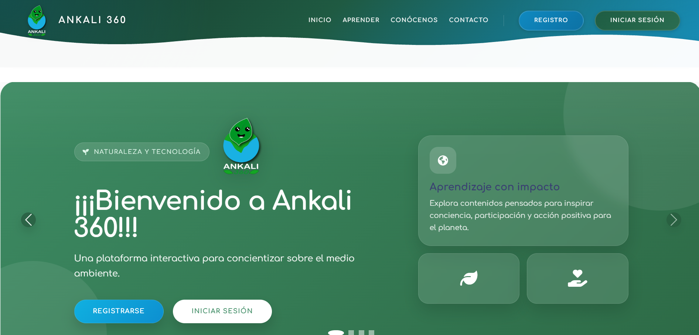
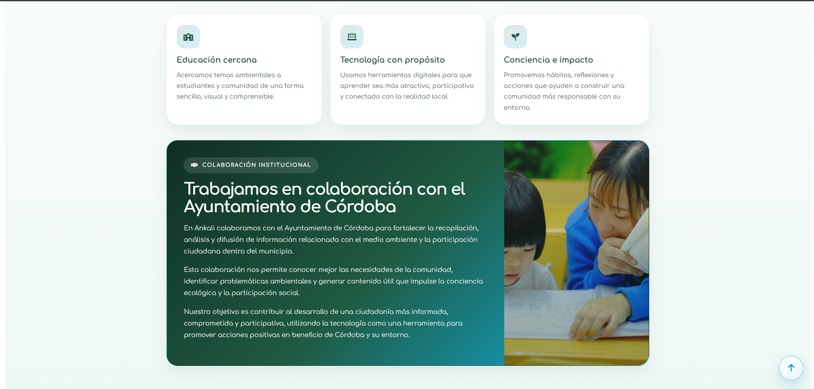
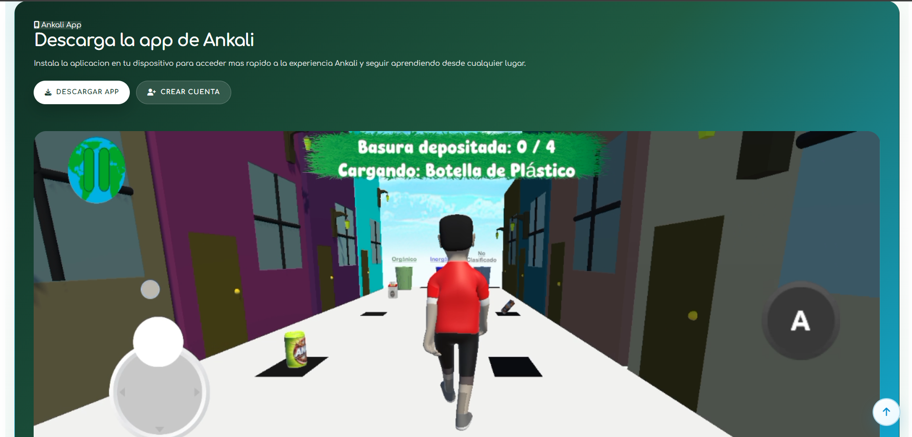
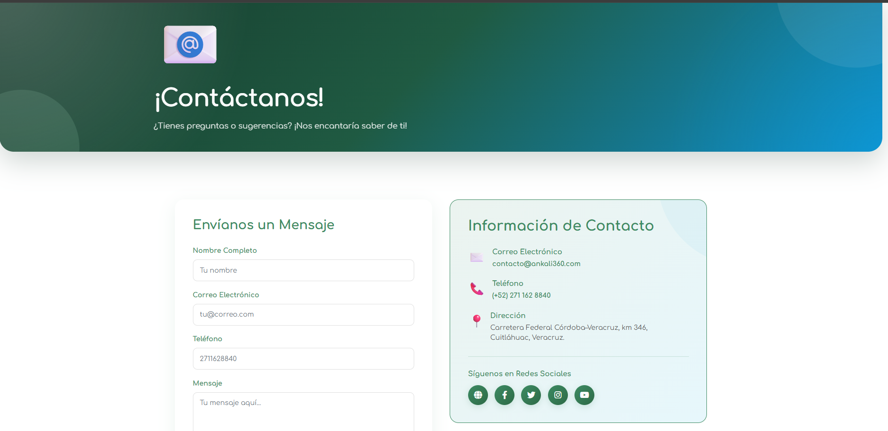
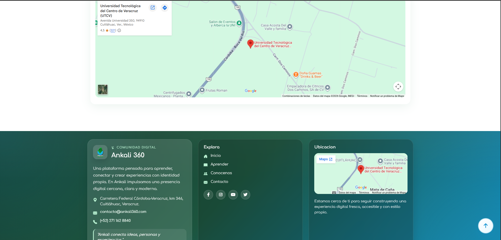
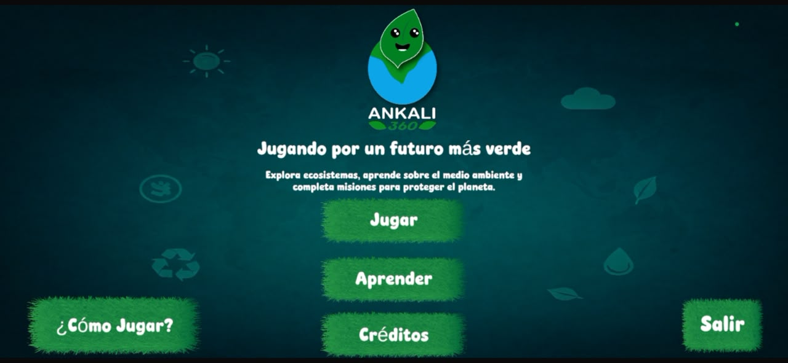
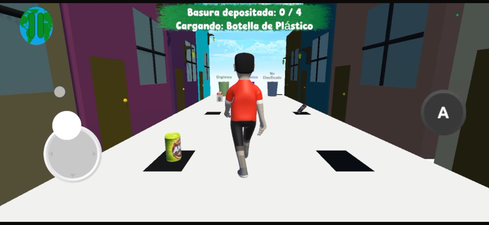
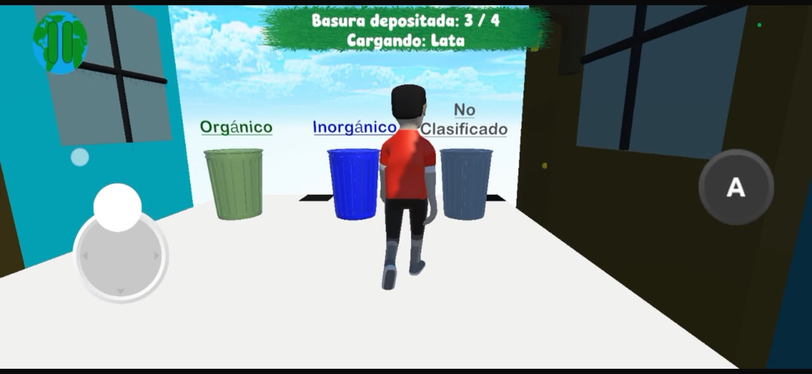
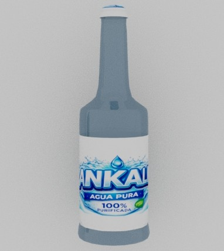
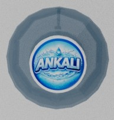

Plataforma Web Educativa

Posicionamiento SEO en Google

Página Principal

Sección Informativa

Módulo de Aprendizaje

Módulo de Contacto

Sección de Ubicación
Plataforma interactiva, sitio web y videojuego 3D enfocado en la concientización y educación ambiental.
Ankali 360 es un proyecto integral desarrollado en equipo y en colaboración con el H. Ayuntamiento de Córdoba, con el propósito de sensibilizar a la comunidad sobre el cambio climático y la gestión de residuos. Combina una plataforma web educativa con una experiencia interactiva 3D donde los usuarios aprenden a clasificar basura orgánica, inorgánica y no clasificada a través de mecánicas de juego. Además, el proyecto mantiene un desarrollo constante incorporando nuevas secciones e interacciones educativas, complementado con una estrategia de marketing digital orientada a difundir las campañas ambientales en redes sociales y medios comunitarios para lograr un mayor alcance e impacto en la población.
Unity, C#, HTML/CSS, JavaScript, Adobe Illustrator y Maya
Plataforma Web & Videojuego 3D
Colaboración Institucional / Impacto Social
Posicionamiento SEO en Google

Página Principal

Sección Informativa

Módulo de Aprendizaje

Módulo de Contacto

Sección de Ubicación

Menú del Juego

Entorno 3D y Clasificación

Mecánica de Recolección

Modelo 3D - Botella

Modelo 3D - Tapa